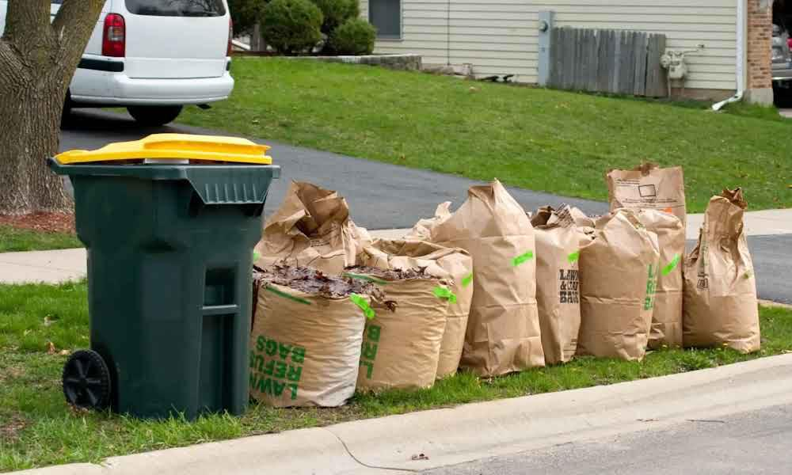

Household waste is the waste that is generated from everyday activities in homes, such as cooking, cleaning, and other routine tasks.
Household waste can be divided into several categories based on its composition and disposal needs. Understanding these types is essential for handling waste effectively and promoting recycling and safe disposal.
Household waste categories:
Organic Waste
Recyclable Waste
Hazardous Waste
Solid Waste
Liquid Waste

1. Organic Waste
Organic waste includes food scraps, garden trimmings, and other biodegradable materials that decompose naturally over time.
How you can manage:
Composting: Set up a compost bin for biodegradable waste, which can be used to fertilize your gardens and reduce landfill contributions.
Green Bins: Many communities offer green waste collection bins for organic materials, which are composted at municipal facilities.
2. Recyclable Waste
Recyclable waste is material that can be made into new products. Recycling reduces the need for raw materials, saves energy, and minimizes waste in landfills.
How you can manage:
Make Recycling Bins: Use different recycling bins for each type of material to make sure that they reach the appropriate recycling centers.
Drop-Off Centers: If street recycling isn’t available, many communities have drop-off centers for paper, metal, glass, and plastic waste.
3. Hazardous Waste
Household hazardous waste includes items that can pose significant health and environmental risks if not handled properly. These items are toxic, flammable, corrosive, etc. Examples include batteries, paint, and household cleaners.
How you can manage:
Designated Disposal Sites: Check with local waste agencies for HHW (Household Hazardous Waste) drop-off sites.
Safety Tips: Never throw away hazardous waste by pouring it down the drain or placing it with regular trash, as it can contaminate water supplies and harm sanitation workers.
4. Solid Waste
Solid waste includes non-recyclable materials that don’t decompose easily. These items end up in landfills and can take years to break down, adding to environmental strain.
How you can manage:
Reduce and Reuse: Avoid single-use items and choose sustainable alternatives whenever possible.
5. Liquid Waste
Liquid waste from households, including leftover cleaning products and other liquid materials, can contain harmful chemicals that pollute water supplies if improperly handled.
How you can manage:
Waste Removal Services: Many communities have guidelines for liquid waste disposal, such as using designated disposal sites.